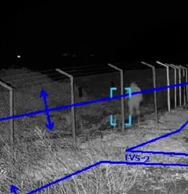
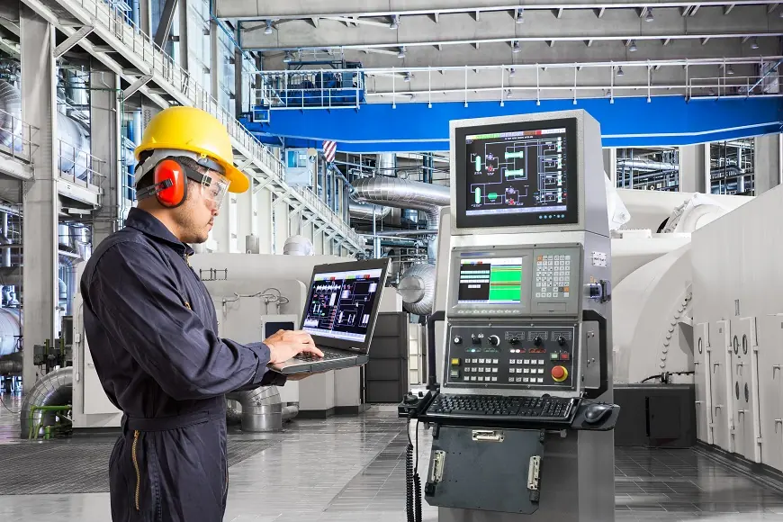
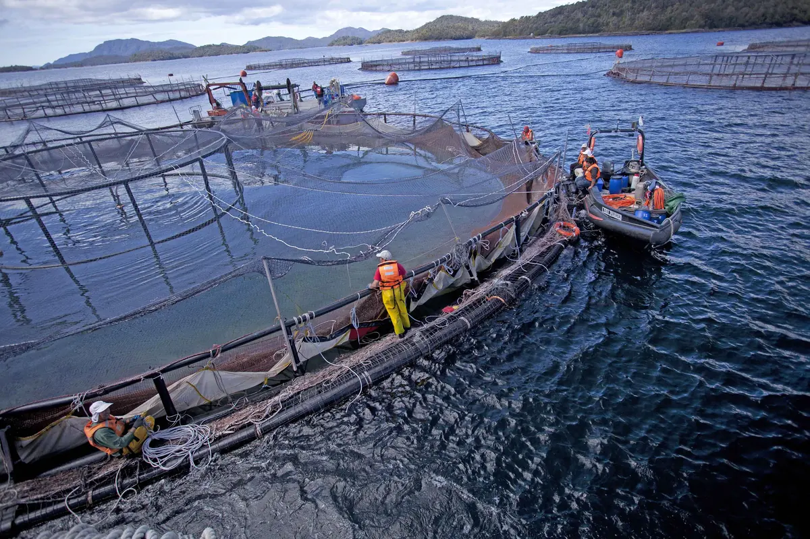
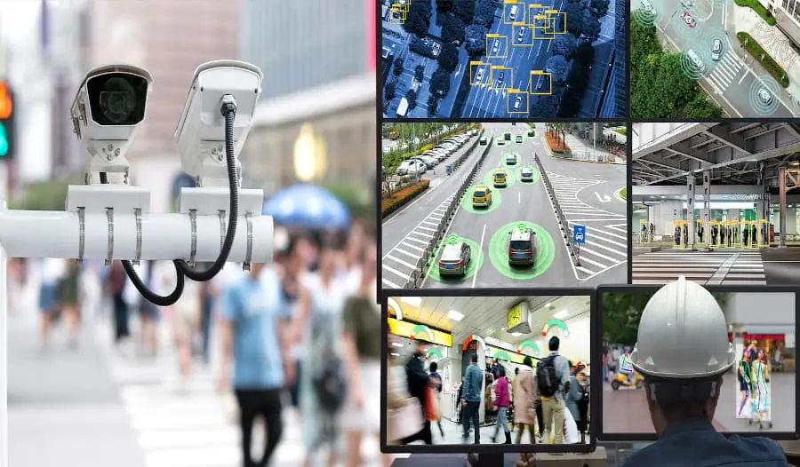
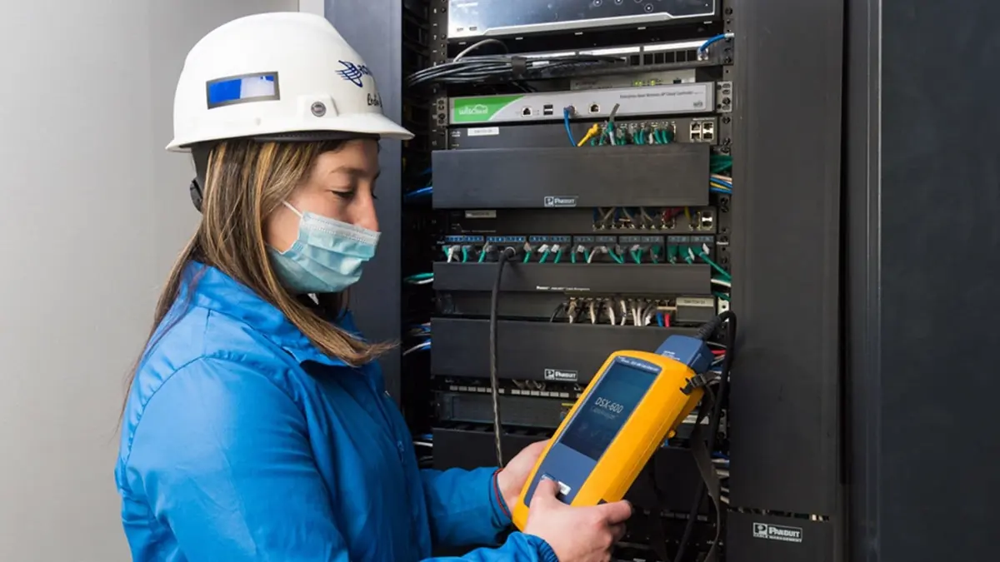
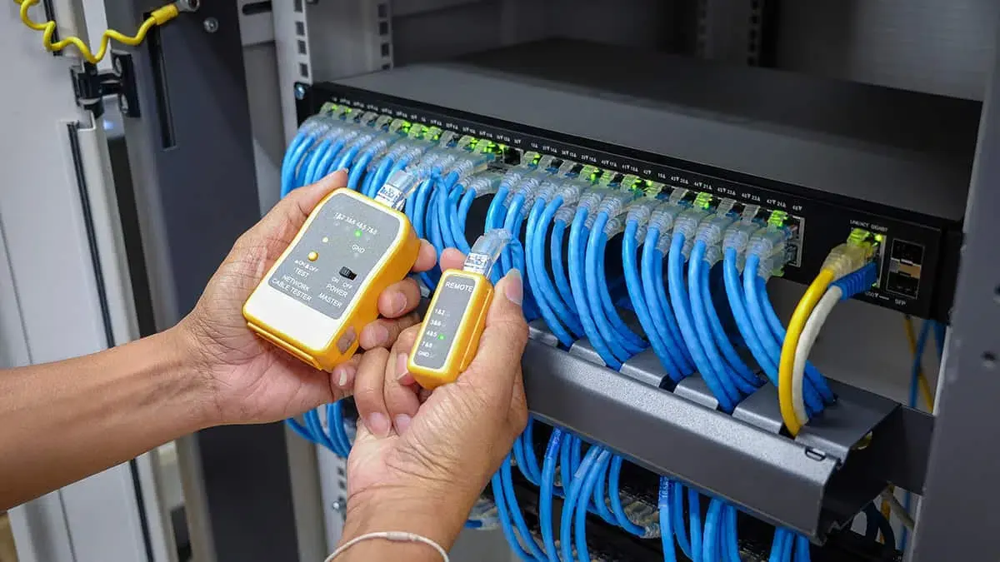
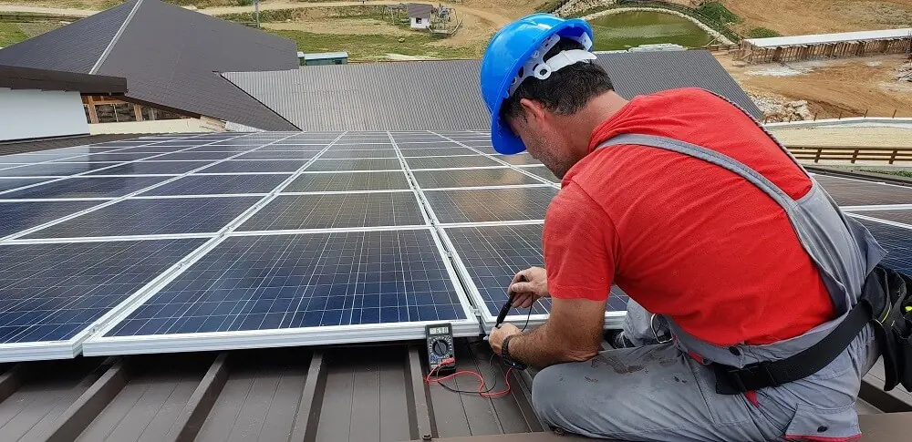

Servicios
Experiencia para operaciones más seguras
Entregamos servicios especializados en ciberseguridad OT, ingeniería y tecnología, diseñados para reducir riesgos, fortalecer la resiliencia y asegurar la continuidad de las operaciones críticas.
Nuestros servicios
-
Seguridad Inteligente 24/7
Protección integral con IA, CCTV y vigilancia OS-10. Monitoreo en tiempo real y defensa perimetral para entornos de alta exigencia.

-
Automatización Industrial
Eficiencia operativa con sensores, IA y mantenimiento predictivo. Soluciones IoT para optimizar procesos críticos.

-
Industria Salmonera
Visión térmica y vigilancia submarina en tiempo real. Detección de intrusos y control de EPP con IA.

-
Video Analítica
Análisis automático de eventos, rostros y comportamiento. Alertas y decisiones automatizadas en segundos.

-
Internet Satelital
Conectividad remota confiable en zonas extremas. Tecnologías híbridas con Starlink para asegurar comunicación continua.
-
Faena Segura
Redes industriales de alto rendimiento para operaciones críticas. Fibra óptica y cableado estructurado.

-
Soluciones de Comunicaciones
Redes industriales de alto rendimiento. Enlaces punto a punto, fibra óptica y cableado estructurado.

-
Infraestructura Solar
Diseño, instalación y mantenimiento de plantas fotovoltaicas. +350 MW instalados con monitoreo eficiente.

Modelo de ejecución DyM
Ciclo de madurez y
resiliencia operativa
Transformamos el riesgo en control absoluto. Nuestro framework técnico integra plataformas propias como OTRiskmap y modelos de servicio continuo para blindar su infraestructura sin detener sus procesos industriales.
-
1- Visibilidad y Assessment
Levantamiento de activos y mapeo de vulnerabilidades en tiempo real utilizando OTRiskmap.
-
2- Arquitectura y Cumplimiento
Diseño de la estrategia de mitigación, segmentación de redes y alineación con la Ley 21.663 y normativas GRC.
-
3- Blindaje e Integración
Despliegue de soluciones tecnológicas y remediación de brechas garantizando cero impacto en la operación.
-
4- Monitoreo Continuo
Inteligencia de amenazas, soporte especializado y actualización tecnológica constante bajo nuestro modelo de servicio.
Continuidad operacional y cumplimiento total